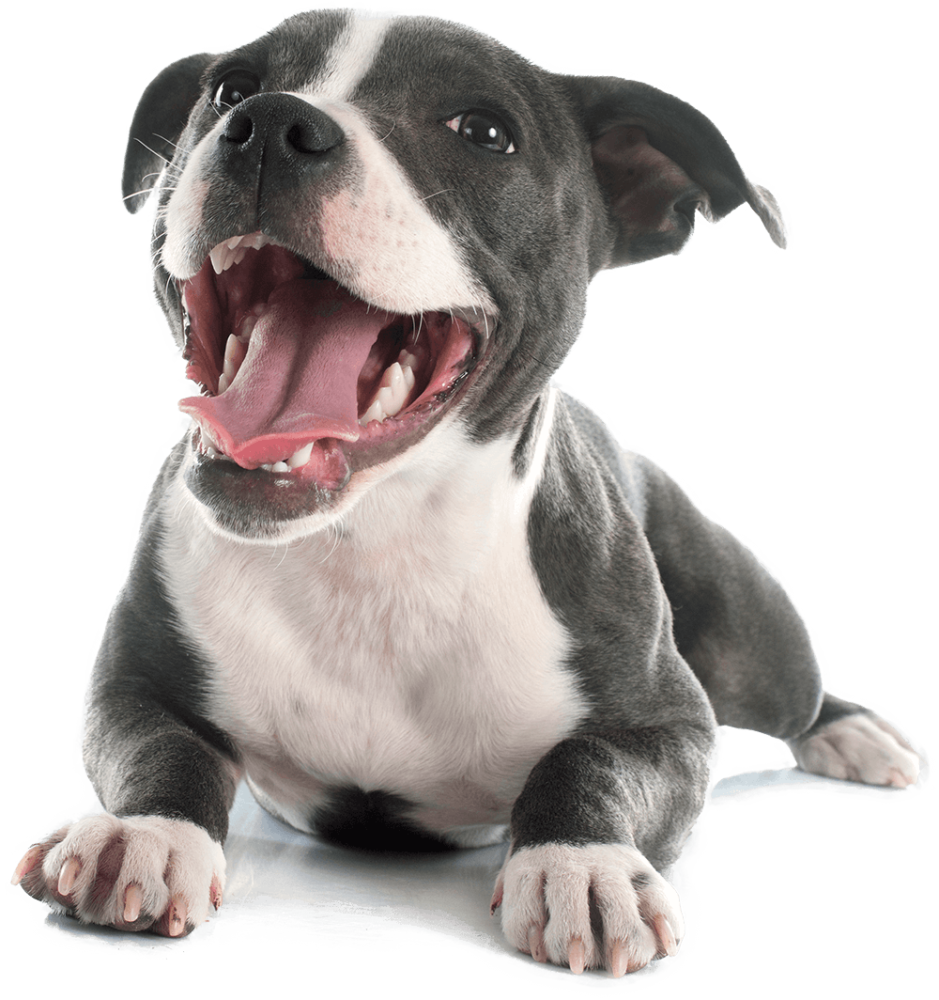

🐶🐱 Adoções Recentes

Nome: Rick
Idade: 2 anos
Porte: Grande
Temperamento:Gentil e afetuoso
Descrição: Rick é o tipo de companheiro que transforma qualquer dia comum em uma aventura divertida. Extremamente brincalhão, ele adora correr, explorar e interagir com pessoas e outros animais. Apesar do porte grande, é super dócil e carinhoso, sempre pronto para receber um cafuné ou deitar ao seu lado. Ideal para famílias ativas ou quem busca um amigo leal e cheio de energia positiva.

Nome: Nina
Idade: 2 anos
Porte: Médio
Temperamento: dócil e brincalhona
Descrição: